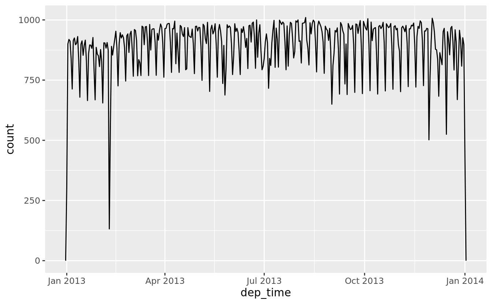
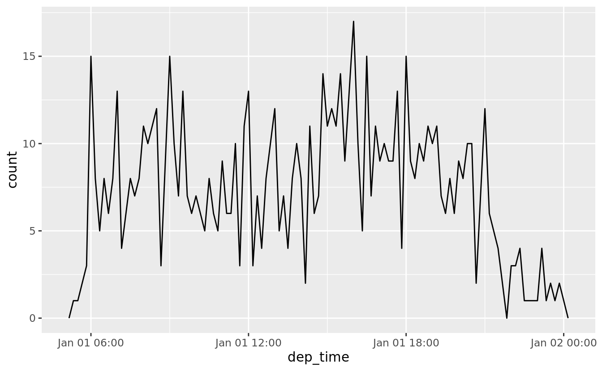
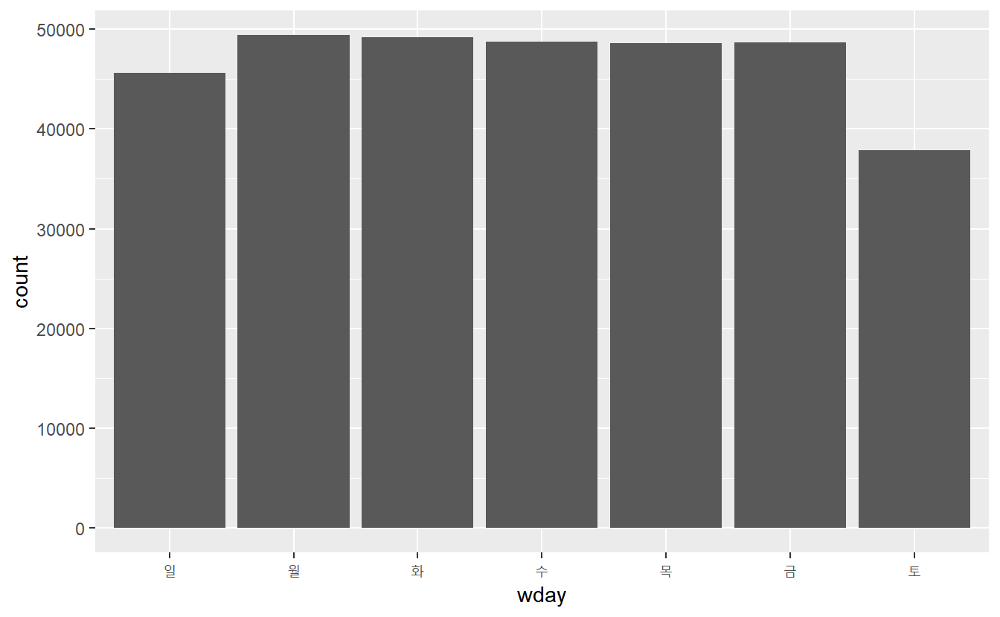
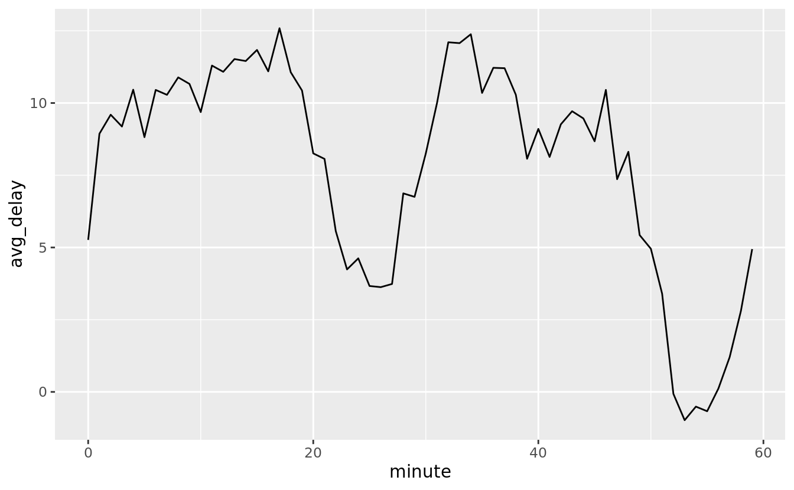
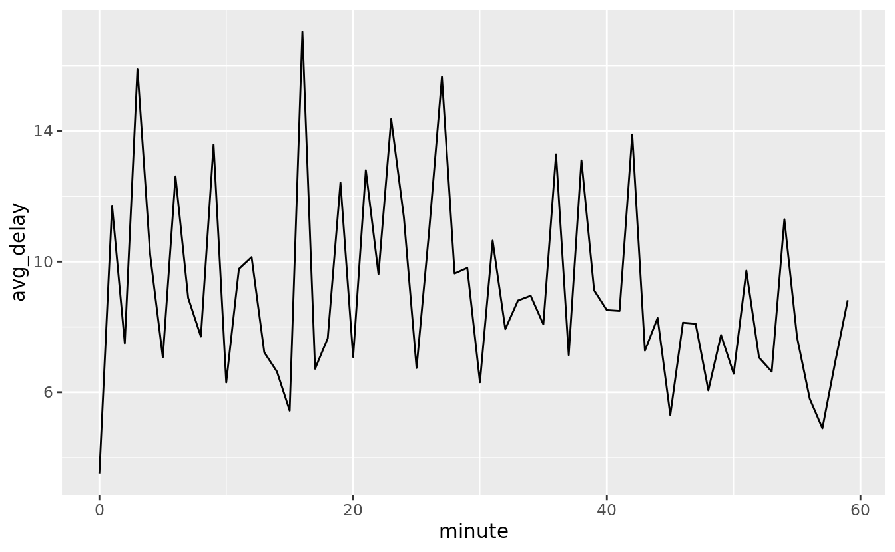
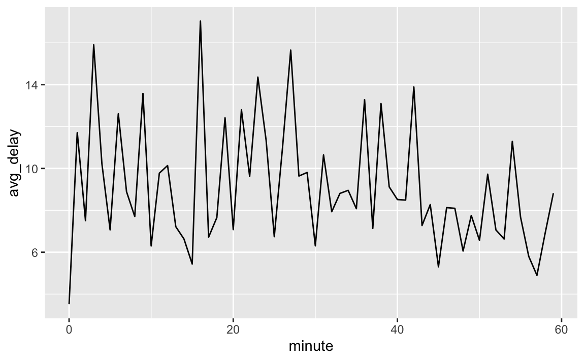
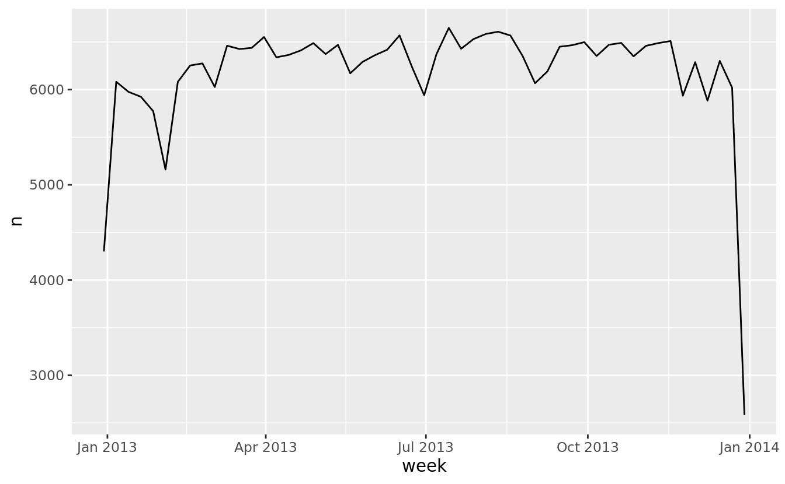
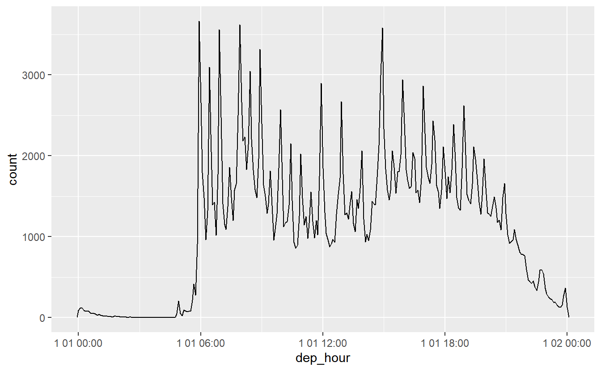

16 날짜와 시간
16.1 들어가기
이 장에서는 R 에서 날짜와 시간을 다루는 법을 볼 것이다. 언뜻 생각하면 날짜와 시간은 간단해 보인다. 일상 생활에서 늘 사용하고 있으며 복잡할 것이 없을 것 같다. 그러나 날짜와 시간에 대해 배울수록 더 복잡해 보일 것이다. 몸풀기로, 간단해 보이는 다음 세 문제를 보자.
- 1년은 항상 365일인가?
- 1일은 항상 24시인가?
- 1분은 항상 60초인가?
1년이 항상 365일은 아니라는 걸 대부분 알고 있을 것이다. 하지만 한 해가 윤년인지를 결정하는 규칙을 완벽하게 알고 있는가?(세 파트가 있다.) 세계 많은 곳에서 일광절약제(daylight saving time, DST)를 이용하고 있고, 따라서 어떤 날은 23시이고, 다른 날은 25시라는 것을 기억하는 사람도 있을 것이다. 지구 자전이 점차 느려지기 때문에 윤초가 추가되어 가끔씩 1분이 61초가 된다는 것을 아는 사람은 많지 않을 것이다.
날짜와 시간은 두 가지 물리 현상(지구 자전과 공전)과 월, 시간대, 일광절약제를 포함한 많은 지정학적 현상을 조화시켜야 하기 때문에 쉬운 문제가 아니다. 이 장에서는 날짜와 시간에 대해 세부 사항을 속속들이 배우지는 않겠지만 일반적인 데이터 분석 문제에 이용할 수 있는 기술들을 탄탄히 배울 것이다.
16.2 날짜/시간 생성하기
시각을 나타내는 날짜/시간의 세 가지 유형이 있다.
데이트형 (date) : 날짜. 티블에서
<date>로 출력한다.타임형 (time) : 하루 중 시간. 티블에서
<time>으로 출력한다.데이트-타임형 (date-time) : 날짜 더하기 시간. 시점을 고유하게 (일반적으로 가장 가까운 초로) 식별한다. 티블에서
<dttm>으로 출력한다. R의 다른 부분에서는 POSIXct 라고 부르지만, 그다지 유용한 이름은 아니라고 생각한다.
R에는 시간 저장을 위한 네이티브 클래스가 없기 때문에 이 장에서는 데이트형과 데이트-타임형에만 집중할 것이다. 네이티브 클래스가 필요하다면 hms 패키지를 이용해보라.
사용자 요구를 충족하는 데이터 유형 중, 가능한 한 가장 간단한 것을 사용해야 한다. 즉 데이트-타임형 대신 데이트형을 써도 된다면 그래야 한다는 말이다. 데이트-타임형은 시간대를 다루기 때문에 훨씬 더 복잡한데 이 장의 끝에서 살펴볼 것이다.
현재 날짜 또는 데이트-타임을 얻으려면 today() 또는 now() 를 사용하면 된다.
이 외에 날짜/시간을 생성하는 세 가지 방법이 있다.
- 문자열로부터
- 개별 데이트-타임형 구성요소로부터
- 기존의 날짜/시간 객체로부터
이들의 작동 방식을 살펴보자.
16.2.1 문자열에서 생성
날짜/시간 데이터는 종종 문자열로 주어진다. 우리는 이미 date-times 에서 문자열을 데이트-타임형으로 파싱하는 법을 보았다. 다른 방법은 lubridate 에서 제공하는 도우미를 사용하는 것이다. 구성요소의 순서만 지정하면 자동으로 형식을 맞춘다. 도우미를 이용하는 법은 주어진 날짜에 나타난 연, 월, 일의 순서를 확인한 후, “y”, “m”, “d” 를 같은 순서로 배치하는 것이다. 이것이 바로 lubridate 함수의 이름이 되고 주어진 날짜를 파싱한다. 예를 들면
ymd("2017-01-31")
#> [1] "2017-01-31"
mdy("January 31st, 2017")
#> [1] "2017-03-01"
dmy("31-Jan-2017")
#> [1] "2017-01-31"이 함수들은 따옴표로 둘러싸이지 않은 숫자도 받아들인다. 이는 단일 날짜/시간 객체를 생성하는 방법들 중 가장 간결한 방법인데, 날짜/시간 데이터를 필터링할 때 사용할 수 있다. ymd() 는 간결하고 모호하지 않다.
ymd() 와 같은 함수들은 데이트형을 생성한다. 데이트-타임형을 생성하려면 파싱 함수 이름에 언더스코어와 “h”, “m”, “s” 중 하나 이상을 추가해야 한다.
ymd_hms("2017-01-31 20:11:59")
#> [1] "2017-01-31 20:11:59 UTC"
mdy_hm("01/31/2017 08:01")
#> [1] "2017-01-31 08:01:00 UTC"시간대를 제공하여 날짜로부터 데이트-타임형을 강제 생성할 수도 있다.
16.2.2 개별 구성요소에서 생성
때로는 문자열이 아니라 데이트-타임형의 개별 구성요소들이 여러 열에 걸쳐 있는 경우가 있을 것이다. flights 데이터에 있는 것이 그렇다.
flights %>%
select(year, month, day, hour, minute)
#> # A tibble: 336,776 x 5
#> year month day hour minute
#> <int> <int> <int> <dbl> <dbl>
#> 1 2013 1 1 5 15
#> 2 2013 1 1 5 29
#> 3 2013 1 1 5 40
#> 4 2013 1 1 5 45
#> 5 2013 1 1 6 0
#> 6 2013 1 1 5 58
#> # ... with 336,770 more rows이러한 입력으로 날짜/시간을 생성하려면 데이트형은 make_date() 를, 데이트-타임형은 make_datetime() 를 쓰면 된다.
flights %>%
select(year, month, day, hour, minute) %>%
mutate(departure = make_datetime(year, month, day, hour, minute))
#> # A tibble: 336,776 x 6
#> year month day hour minute departure
#> <int> <int> <int> <dbl> <dbl> <dttm>
#> 1 2013 1 1 5 15 2013-01-01 05:15:00
#> 2 2013 1 1 5 29 2013-01-01 05:29:00
#> 3 2013 1 1 5 40 2013-01-01 05:40:00
#> 4 2013 1 1 5 45 2013-01-01 05:45:00
#> 5 2013 1 1 6 0 2013-01-01 06:00:00
#> 6 2013 1 1 5 58 2013-01-01 05:58:00
#> # ... with 336,770 more rows‘flights’ 네 개의 시간 열 각각에 대해 같은 작업을 하자. 시간이 약간 이상한 형식으로 표시되었으므로, 나머지 연산으로 시와 분 구성요소를 추출한다. 이제 데이트-타임형 변수를 생성했으니 이 장의 나머지 부분에서는 이 변수들을 탐색해 볼 것이다.
make_datetime_100 <- function(year, month, day, time) {
make_datetime(year, month, day, time %/% 100, time %% 100)
}
flights_dt <- flights %>%
filter(!is.na(dep_time), !is.na(arr_time)) %>%
mutate(
dep_time = make_datetime_100(year, month, day, dep_time),
arr_time = make_datetime_100(year, month, day, arr_time),
sched_dep_time = make_datetime_100(year, month, day, sched_dep_time),
sched_arr_time = make_datetime_100(year, month, day, sched_arr_time)
) %>%
select(origin, dest, ends_with("delay"), ends_with("time"))
flights_dt
#> # A tibble: 328,063 x 9
#> origin dest dep_delay arr_delay dep_time sched_dep_time
#> <chr> <chr> <dbl> <dbl> <dttm> <dttm>
#> 1 EWR IAH 2 11 2013-01-01 05:17:00 2013-01-01 05:15:00
#> 2 LGA IAH 4 20 2013-01-01 05:33:00 2013-01-01 05:29:00
#> 3 JFK MIA 2 33 2013-01-01 05:42:00 2013-01-01 05:40:00
#> 4 JFK BQN -1 -18 2013-01-01 05:44:00 2013-01-01 05:45:00
#> 5 LGA ATL -6 -25 2013-01-01 05:54:00 2013-01-01 06:00:00
#> 6 EWR ORD -4 12 2013-01-01 05:54:00 2013-01-01 05:58:00
#> # ... with 328,057 more rows, and 3 more variables: arr_time <dttm>,
#> # sched_arr_time <dttm>, air_time <dbl>이 데이터로 한 해에 걸친 출발 시간의 분포를 시각화할 수 있다.

하루 내에서의 분포로 보려면
flights_dt %>%
filter(dep_time < ymd(20130102)) %>%
ggplot(aes(dep_time)) +
geom_freqpoly(binwidth = 600) # 600 s = 10 minutes
수치형 맥락에서 데이트-타임형을 사용할 경우(히스토그램에서와 같이) 1은 1초를 의미하고, 따라서 86400 빈너비(binwidth)는 하루를 의미한다는 것을 주목하라. 데이트형에서는 1은 1일을 의미한다.
16.2.3 기타 유형에서 생성
데이트-타임형과 데이트형 사이를 상호 전환하고 싶을 때도 있을 것이다. as_datetime() 과 as_date() 가 바로 이를 수행한다.
때로 날짜/시간을 ‘유닉스 신기원(Unix Epoch)’인 1970-01-01에서 수치형 오프셋으로 가지고 있을 수 있다. 오프셋이 초 단위인 경우엔 as_datetime() , 일 단위인 경우엔 as_date() 을 사용한다.
16.2.4 연습문제
유효하지 않은 날짜를 포함한 문자열을 파싱하면 어떻게 되는가?
today()의tzone인수의 역할은 무엇인가? 이 인수는 왜 중요한가?적절한 lubridate 함수를 이용하여, 다음 날짜를 각각 파싱하라.
16.3 데이트-타임형 구성요소
날짜/시간 데이터를 R의 데이트-타임형 데이터 구조로 얻는 방법을 이제 알았으니 이를 이용해 할 수 있는 것을 탐색해보자. 이 절에서는 개별 구성요소를 얻고 설정하는 설정 함수(accessor function)에 초점을 맞출 것이다. 다음 절에서는 산술연산이 데이트-타임형에 어떻게 동작하는지 살펴 볼 것이다.
16.3.1 구성요소 가져오기
다음 설정 함수로 데이트형의 개별 부분을 가져올 수 있다. year(), month(), mday() (한 달에서 일), yday() (한 해에서 일), wday (한 주 중 일), hour(), minute(), second() .
datetime <- ymd_hms("2016-07-08 12:34:56")
year(datetime)
#> [1] 2016
month(datetime)
#> [1] 7
mday(datetime)
#> [1] 8
yday(datetime)
#> [1] 190
wday(datetime)
#> [1] 6month() 와 wday() 에서 label = TRUE 를 설정하여 월이나 일의 약식 이름을 반환할 수 있다. abbr = FALSE 를 설정하면 이름 전체를 반환할 수 있다.
month(datetime, label = TRUE)
#> [1] 7
#> Levels: 1 < 2 < 3 < 4 < 5 < 6 < 7 < 8 < 9 < 10 < 11 < 12
wday(datetime, label = TRUE, abbr = FALSE)
#> [1] 금요일
#> Levels: 일요일 < 월요일 < 화요일 < 수요일 < 목요일 < 금요일 < 토요일wday() 를 사용하여 주말보다 평일에 출발하는 항공편이 더 많다는 것을 확인할 수 있다.

출발 지연시간 평균을 매 시의 각 분(0~59 분)에 대해서 살펴보면 흥미로운 패턴이 있다. 20~30분과 50~60분에 출발하는 항공편은 나머지 시간보다 훨씬 덜 지연되는 것으로 보인다.
flights_dt %>%
mutate(minute = minute(dep_time)) %>%
group_by(minute) %>%
summarise(
avg_delay = mean(arr_delay, na.rm = TRUE),
n = n()) %>%
ggplot(aes(minute, avg_delay)) +
geom_line()
흥미롭게도 예정된 출발시간으로 보면 이러한 강한 패턴을 볼 수 없다.
sched_dep <- flights_dt %>%
mutate(minute = minute(sched_dep_time)) %>%
group_by(minute) %>%
summarise(
avg_delay = mean(arr_delay, na.rm = TRUE),
n = n())
ggplot(sched_dep, aes(minute, avg_delay)) +
geom_line()
그러면 왜 실제 출발시간에는 그 패턴이 있는가? 사람에 의해 수집된 많은 데이터가 그런 것처럼, ’좋은‘ 출발시간에 떠나는 항공편 방향으로 편향(bias)이 강하게 존재한다. 인간의 판단이 관여된 데이터로 작업할 때마다 이런 종류의 패턴을 항상 유의해야 한다.

16.3.2 반올림
개별 구성요소를 플롯하는 또 다른 방법은 floor_date() , round_date() , ceiling_date() 로 인근 시간 단위로 날짜를 반올림하는 것이다. 각 ceiling_date() 함수의 입력값으로는, 조정할 날짜 벡터와, 내림(floor), 올림(ceiling), 혹은 반올림(round)해서 맞출 단위의 이름이다. 예를 들어 주당 항공편 수를 플롯할 수 있다.

날짜 반올림 전후 차이를 계산하는 것은 특히 유용할 수 있다.
16.3.3 구성요소 설정
설정 함수를 사용하여 날짜/시간의 구성 요소를 설정할 수 있다.
(datetime <- ymd_hms("2016-07-08 12:34:56"))
#> [1] "2016-07-08 12:34:56 UTC"
year(datetime) <- 2020
datetime
#> [1] "2020-07-08 12:34:56 UTC"
month(datetime) <- 01
datetime
#> [1] "2020-01-08 12:34:56 UTC"
hour(datetime) <- hour(datetime) + 1
datetime
#> [1] "2020-01-08 13:34:56 UTC"수정하는 대신, update() 로 새로운 데이트-타임형을 생성할 수도 있다. 이 방법을 사용하여 여러 개의 값을 한 번에 설정할 수도 있다.
값이 너무 큰 경우에는 이월된다.
ymd("2015-02-01") %>%
update(mday = 30)
#> [1] "2015-03-02"
ymd("2015-02-01") %>%
update(hour = 400)
#> [1] "2015-02-17 16:00:00 UTC"update() 를 사용하여 관심있는 해의 하루 동안 항공편의 분포를 볼 수 있다.
flights_dt %>%
mutate(dep_hour = update(dep_time, yday = 1)) %>%
ggplot(aes(dep_hour)) +
geom_freqpoly(binwidth = 300)
날짜의 상위 구성 요소를 상수로 설정하면, 하위 구성 요소의 패턴을 탐색할 수 있어서 매우 유용한 방법이다
16.3.4 연습문제
하루 동안 비행시간의 분포는 한 해 동안 어떻게 변화했는가?
dep_time, sched_dep_time, dep_delay를 비교하라. 이들은 일관성이 있는가? 무엇을 발견했는지 설명하라.출발, 도착 사이의 시간과
air_time을 비교하라. 무엇을 발견했는지 설명하라. (힌트: 공항의 위치를 살펴보라.)하루 동안 평균 지연시간은 어떻게 변화하는가?
dep_time또는sched_dep_time를 사용해야 하는가? 이유는 무엇인가?지연 가능성을 최소화하려면 한 주 중 어느 요일에 떠나야 하는가?
왜
diamonds$carat과flights$sched_dep_time분포가 비슷한가?20-30분과 50-60분에서 출발이 빠른 것은 일찍 출발하도록 계획된 항공편 때문이라는 우리의 가설을 확인하라. 힌트: 항공편이 지연되었는지 여부를 알려주는 이진 변수를 생성하라.
16.4 시간 범위
다음으로 뺄셈, 덧셈, 나눗셈 같은 산술연산이 데이트형에 어떻게 동작하는지 알아보자. 여기에서는 시간 범위(time span)를 대표하는 중요한 클래스 세 가지를 배우게 된다.
- 듀레이션형 (duration): 정확한 초를 나타냄.
- 피리어드형 (period): 주와 월과 같은 인간의 단위를 나타냄.
- 인터벌형 (interval): 시점과 종점을 나타냄.
16.4.1 듀레이션형
R에서 두 데이트형 뺄셈을 하면 difftime형 객체가 생긴다.
difftime 클래스 객체는 초, 분, 시, 일 또는 주의 시간 범위를 기록한다. 이러한 애매함 때문에 difftime형으로 작업하는 것이 약간 고통스러울 수 있다. 따라서 lubridate 는 항상 초를 사용하는 대안 클래스, 듀레이션형 을 제공한다.
듀레이션형에는 편리한 생성자가 많다.
dseconds(15)
#> [1] "15s"
dminutes(10)
#> [1] "600s (~10 minutes)"
dhours(c(12, 24))
#> [1] "43200s (~12 hours)" "86400s (~1 days)"
ddays(0:5)
#> [1] "0s" "86400s (~1 days)" "172800s (~2 days)"
#> [4] "259200s (~3 days)" "345600s (~4 days)" "432000s (~5 days)"
dweeks(3)
#> [1] "1814400s (~3 weeks)"
dyears(1)
#> [1] "31557600s (~1 years)"듀레이션형은 항상 초 단위로 시간 범위를 기록한다. 이보다 큰 단위를 생성하려면 분, 시, 일, 주, 연을 표준비율로 변환해야 한다(분당 60초, 시당 60분, 일당 24시, 주당 7일, 연당 365일).
듀레이션형을 더하거나 곱할 수 있다.
2 * dyears(1)
#> [1] "63115200s (~2 years)"
dyears(1) + dweeks(12) + dhours(15)
#> [1] "38869200s (~1.23 years)"일(day)에서 듀레이션형을 더하고 뺄 수 있다.
그러나 듀레이션형은 정확한 초 개수로 표시하므로 때로는 예상치 못한 결과를 얻을 수도 있다.
one_pm <- ymd_hms("2016-03-12 13:00:00", tz = "America/New_York")
one_pm
#> [1] "2016-03-12 13:00:00 EST"
one_pm + ddays(1)
#> [1] "2016-03-13 14:00:00 EDT"3월 12일 오후 1시의 1일 후가 왜 3월 13일 오후 2시인가? 날짜를 주의 깊게 보면 시간대가 바뀌어 있다. 일광절약제 때문에 3월 12일에는 23시만 있다. 따라서 하루에 해당하는 초를 더하면 다른 시간을 갖게 된다.
16.4.2 피리어드형
이 문제를 해결하기 위해 lubridate 는 **피리어드형을 제공한다. 피리어드형은 시간 범위이지만 정해진 초 길이가 없다. 대신 일과 월과 같은 ’사람의‘ 시간으로 동작한다. 따라서 작동 방식이 보다 직관적이다.
듀레이션형과 마찬가지로 피리어드형은 다수의 생성 함수로 편리하게 생성할 수 있다.
seconds(15)
#> [1] "15S"
minutes(10)
#> [1] "10M 0S"
hours(c(12, 24))
#> [1] "12H 0M 0S" "24H 0M 0S"
days(7)
#> [1] "7d 0H 0M 0S"
months(1:6)
#> [1] "1m 0d 0H 0M 0S" "2m 0d 0H 0M 0S" "3m 0d 0H 0M 0S" "4m 0d 0H 0M 0S"
#> [5] "5m 0d 0H 0M 0S" "6m 0d 0H 0M 0S"
weeks(3)
#> [1] "21d 0H 0M 0S"
years(1)
#> [1] "1y 0m 0d 0H 0M 0S"피리어드형을 더하거나 곱할 수 있다.
10 * (months(6) + days(1))
#> [1] "60m 10d 0H 0M 0S"
days(50) + hours(25) + minutes(2)
#> [1] "50d 25H 2M 0S"그리고 물론, 데이트형에 더해진다. 듀레이션형과 달리 피리어드형은 의도한 대로 동작한다.
# 윤년
ymd("2016-01-01") + dyears(1)
#> [1] "2016-12-31 06:00:00 UTC"
ymd("2016-01-01") + years(1)
#> [1] "2017-01-01"
# 일광절약제
one_pm + ddays(1)
#> [1] "2016-03-13 14:00:00 EDT"
one_pm + days(1)
#> [1] "2016-03-13 13:00:00 EDT"이제 피리어드형을 사용해서 비행 날짜에 관련된 문제를 해결해보자. 일부 항공편은 뉴욕시에서 출발하기 전에 목적지에 도착한 것으로 보여진다.
flights_dt %>%
filter(arr_time < dep_time)
#> # A tibble: 10,633 x 9
#> origin dest dep_delay arr_delay dep_time sched_dep_time
#> <chr> <chr> <dbl> <dbl> <dttm> <dttm>
#> 1 EWR BQN 9 -4 2013-01-01 19:29:00 2013-01-01 19:20:00
#> 2 JFK DFW 59 NA 2013-01-01 19:39:00 2013-01-01 18:40:00
#> 3 EWR TPA -2 9 2013-01-01 20:58:00 2013-01-01 21:00:00
#> 4 EWR SJU -6 -12 2013-01-01 21:02:00 2013-01-01 21:08:00
#> 5 EWR SFO 11 -14 2013-01-01 21:08:00 2013-01-01 20:57:00
#> 6 LGA FLL -10 -2 2013-01-01 21:20:00 2013-01-01 21:30:00
#> # ... with 10,627 more rows, and 3 more variables: arr_time <dttm>,
#> # sched_arr_time <dttm>, air_time <dbl>이들은 심야 항공편이다. 우리는 출발과 도착시간 모두에 같은 날짜 정보를 사용했었지만, 이 항공편들은 도착시간이 다음날이다. 심야 항공편의 도착시간에 days(1) 을 더해서 문제를 해결할 수 있다.
flights_dt <- flights_dt %>%
mutate(
overnight = arr_time < dep_time,
arr_time = arr_time + days(overnight * 1),
sched_arr_time = sched_arr_time + days(overnight * 1)
)이제 모든 항공편이 물리학의 법칙을 벗어나지 않는다.
16.4.3 인터벌형
dyears(1) / ddays(365) 가 반환해야 하는 값은 명백하다. 바로 1인데 왜냐하면, 듀레이션형은 항상 초 단위로 표현하며 듀레이션형 1년은 365일에 해당하는 초로 정의되기 때문이다.
years(1) / days(1) 이 반환해야 하는 값은 무엇인가? 음… 2015년이라면 365를 반환해야하지만 2016년이면 366을 반환해야 한다! lubridate 가 하나의 명확한 답을 주기에 충분한 정보가 없다. 대신 경고와 함께 예측값을 준다.
더 정확한 값을 원한다면 인터벌형 을 사용해야 한다. 인터벌형은 시작점이 있는 듀레이션형이어서 기간이 정확히 얼마인지 확인할 수 있도록 만든다.
한 인터벌형이 피리어드형 얼마에 해당하는지 확인하려면 정수 나누기를 사용해야 한다.
16.4.4 요약
듀레이션형, 피리어드형, 인터벌형 중에서 선택은 어떻게 해야 하는가? 언제나 그렇듯이 주어진 문제를 해결하는 가장 간단한 데이터 구조를 선택하라. 단지 물리적인 시간만 고려하는 경우에는 듀레이션형을 사용하라. 사람의 시간을 추가해야 하는 경우에는 피리어드형을 사용하라. 사람이 사용하는 시간단위로 파악해야 하는 경우에는 인터벌형을 사용하라.
Figure 16.1 은 다른 데이터 유형 사이에 허용된 산술연산을 요약한 것이다.

Figure 16.1: The allowed arithmetic operations between pairs of date/time classes.
16.4.5 연습문제
왜
months()는 있고dmonths()는 없는가?R을 막 배우기 시작한 사람에게
days(overnight * 1)을 설명하라. 어떻게 동작하는가?2015년 매월 첫 날짜를 주는 데이트형 벡터를 생성하라. 현재 연도의 매월 첫 날짜를 주는 데이트형 벡터를 생성하라.
여러분의 생일이 (데이트형으로) 주어질 때, 나이를 연으로 반환하는 함수를 작성하라.
왜 다음은 작동하지 않는가?
(today() %--% (today() + years(1)) / months(1)
16.5 시간대
시간대는 엄청나게 복잡한 주제인데, 지정학적 요소들과 상호작용이 있기 때문이다. 다행히 데이터 분석을 할 때 시간대가 항상 중요하지는 않기 때문에 세부사항을 모두 파고들지 않아도 되지만, 정면으로 맞서야 하는 문제가 몇 개 있다.
첫 번째 문제는 일상적인 시간대 이름은 모호하다는 것이다. 예를 들어 여러분이 미국인이라면 아마 EST, 즉 동부 표준시가 익숙할 것이다. 그러나 호주와 캐나다에도 EST가 있다! 혼란을 방지하기 위해, R은 국제 표준 IANA 시간대를 사용한다. 이는 일반적으로 ’<대륙>/<도시>’ 형태로 ’/’를 쓰는 일관된 명명 체계를 사용한다 (모든 국가가 대륙에 위치하는 것은 아니기 때문에 몇 가지 예외도 있다). 예를 들면 ’America/New_York‘, ’Europe/Paris‘와 ’Pacific/Auckland‘ 등이 있다.
시간대가 국가, 혹은 국가 내 지역과 관련되었다고 일반적으로 생각하면 왜 시간대가 도시를 사용하는지 궁금할 것이다. 이는 IANA 데이터베이스가 시간대 규칙을 수십 년 분량이나 기록해야 하기 때문이다. 수십 년 사이에 국가 이름은 꽤 자주 변경(또는 분리)되지만, 도시의 이름은 유지되는 편이다. 또 다른 문제는 이름은 현재의 행동뿐만 아니라 전체 역사를 반영해야 한다는 것이다. 예를 들어 ’America/New_York‘과 ’America/Detroit‘ 시간대가 있다. 두 도시는 현재 모두 동부 표준시간을 사용하지만 (디트로이트가 위치한) 미시간주는 1969-1972’에, 일광절약제를 따르지 않았기 때문에 이름이 따로 필요한 것이다. 이러한 이야기들이 있는 원시 시간대 데이터베이스(http://www.iana.org/time-zones)를 읽어볼 만하다!
Sys.timezone() 를 사용해서 현재 R이 인식하고 있는 시간대를 알아볼 수 있다. (우리나라 시간대는 “Asia/Seoul”이다.)
(R이 모르는 경우 NA 가 나올 것이다.)
그리고 OlsonNames() 를 사용해서 모든 시간대 이름의 전체 목록을 볼 수 있다.
length(OlsonNames())
#> [1] 593
head(OlsonNames())
#> [1] "Africa/Abidjan" "Africa/Accra" "Africa/Addis_Ababa"
#> [4] "Africa/Algiers" "Africa/Asmara" "Africa/Asmera"R에 있어서, 시간대는 출력 제어만 하는 데이트-타임형의 한 속성이다. 예를 들어 이 세 가지 객체는 같은 시점을 나타낸다.
(x1 <- ymd_hms("2015-06-01 12:00:00", tz = "America/New_York"))
#> [1] "2015-06-01 12:00:00 EDT"
(x2 <- ymd_hms("2015-06-01 18:00:00", tz = "Europe/Copenhagen"))
#> [1] "2015-06-01 18:00:00 CEST"
(x3 <- ymd_hms("2015-06-02 04:00:00", tz = "Pacific/Auckland"))
#> [1] "2015-06-02 04:00:00 NZST"이들이 같은 시점이라는 것을 뺄셈을 사용하여 확인할 수 있다.
별도 명시가 없는 한, lubridate 는 항상 UTC를 사용한다. UTC(Coordinated Universal Time)는 과학계에서 사용하는 표준 시간대이며 그 전신인 GMT(그리니치 표준시)와 거의 같다. UTC는 DST가 없는데, 이로 인해 계산에 용이한 표현 방법이 된다. c() 와 같이 데이트-타임형을 조합하는 연산은 종종 시간대를 제거한다. 이 경우 데이트-타임형은 현지 시간대로 표시된다.
x4 <- c(x1, x2, x3)
x4
#> [1] "2015-06-01 12:00:00 EDT" "2015-06-01 12:00:00 EDT"
#> [3] "2015-06-01 12:00:00 EDT"두 가지 방법으로 시간대를 변경할 수 있다.
시각을 유지하고 표시 방법을 변경한다. 시각은 맞지만 더 자연스러운 표시를 원한다면 이 방법을 써라.
x4a <- with_tz(x4, tzone = "Australia/Lord_Howe") x4a #> [1] "2015-06-02 02:30:00 +1030" "2015-06-02 02:30:00 +1030" #> [3] "2015-06-02 02:30:00 +1030" x4a - x4 #> Time differences in secs #> [1] 0 0 0(이 예시는 시간대의 다른 어려운 점을 보여준다. 시간대 오프셋이 모두 정수-시 (integer hour) 인 것은 아니다!)
기본 시각을 변경한다. 시각에 잘못된 시간대가 붙어 있어서 이를 수정해야 한다면 이 방법을 사용하라.